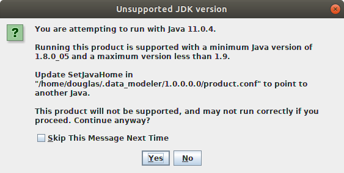
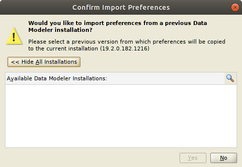
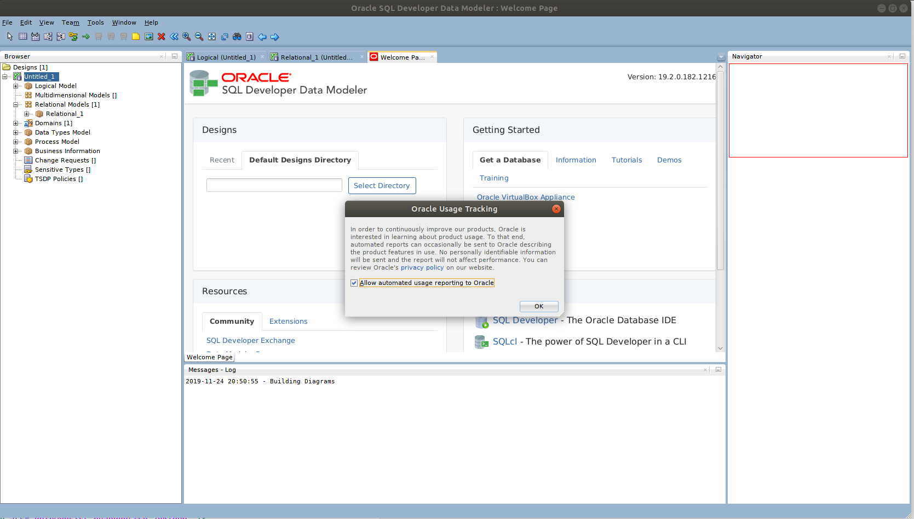

OverviewI wanted to install SQL Developer Data Modeler under Ubuntu (18.04.3 LTS (Bionic Beaver)). ReferencesProcedureCheck Java VersionI ran the following command to check the installed Java version: java --version The output was: openjdk 11.0.4 2019-07-16 OpenJDK Runtime Environment (build 11.0.4+11-post-Ubuntu-1ubuntu218.04.3) OpenJDK 64-Bit Server VM (build 11.0.4+11-post-Ubuntu-1ubuntu218.04.3, mixed mode, sharing) Finding Installation ProcedureA Google search led me to the following procedure: Install AlienI installed alien as follows in order to convert the downloaded RPM into a Debian package for installation under Ubuntu: sudo apt install -y alien The output was: [sudo] password for douglas: Reading package lists... Done Building dependency tree Reading state information... Done The following additional packages will be installed: debugedit librpm8 librpmbuild8 librpmio8 librpmsign8 rpm rpm-common rpm2cpio Suggested packages: rpm-i18n elfutils rpmlint rpm2html The following NEW packages will be installed: alien debugedit librpm8 librpmbuild8 librpmio8 librpmsign8 rpm rpm-common rpm2cpio 0 to upgrade, 9 to newly install, 0 to remove and 3 not to upgrade. Need to get 556 kB of archives. After this operation, 2,159 kB of additional disk space will be used. Get:1 http://au.archive.ubuntu.com/ubuntu bionic/universe amd64 librpmio8 amd64 4.14.1+dfsg1-2 [74.6 kB] Get:2 http://au.archive.ubuntu.com/ubuntu bionic/universe amd64 librpm8 amd64 4.14.1+dfsg1-2 [173 kB] Get:3 http://au.archive.ubuntu.com/ubuntu bionic/universe amd64 librpmbuild8 amd64 4.14.1+dfsg1-2 [70.5 kB] Get:4 http://au.archive.ubuntu.com/ubuntu bionic/universe amd64 librpmsign8 amd64 4.14.1+dfsg1-2 [8,184 B] Get:5 http://au.archive.ubuntu.com/ubuntu bionic/universe amd64 rpm-common amd64 4.14.1+dfsg1-2 [28.7 kB] Get:6 http://au.archive.ubuntu.com/ubuntu bionic/universe amd64 rpm2cpio amd64 4.14.1+dfsg1-2 [7,988 B] Get:7 http://au.archive.ubuntu.com/ubuntu bionic/universe amd64 debugedit amd64 4.14.1+dfsg1-2 [19.1 kB] Get:8 http://au.archive.ubuntu.com/ubuntu bionic/universe amd64 rpm amd64 4.14.1+dfsg1-2 [119 kB] Get:9 http://au.archive.ubuntu.com/ubuntu bionic/universe amd64 alien all 8.95 [54.5 kB] Fetched 556 kB in 1s (436 kB/s) Selecting previously unselected package librpmio8. (Reading database ... 207200 files and directories currently installed.) Preparing to unpack .../0-librpmio8_4.14.1+dfsg1-2_amd64.deb ... Unpacking librpmio8 (4.14.1+dfsg1-2) ... Selecting previously unselected package librpm8. Preparing to unpack .../1-librpm8_4.14.1+dfsg1-2_amd64.deb ... Unpacking librpm8 (4.14.1+dfsg1-2) ... Selecting previously unselected package librpmbuild8. Preparing to unpack .../2-librpmbuild8_4.14.1+dfsg1-2_amd64.deb ... Unpacking librpmbuild8 (4.14.1+dfsg1-2) ... Selecting previously unselected package librpmsign8. Preparing to unpack .../3-librpmsign8_4.14.1+dfsg1-2_amd64.deb ... Unpacking librpmsign8 (4.14.1+dfsg1-2) ... Selecting previously unselected package rpm-common. Preparing to unpack .../4-rpm-common_4.14.1+dfsg1-2_amd64.deb ... Unpacking rpm-common (4.14.1+dfsg1-2) ... Selecting previously unselected package rpm2cpio. Preparing to unpack .../5-rpm2cpio_4.14.1+dfsg1-2_amd64.deb ... Unpacking rpm2cpio (4.14.1+dfsg1-2) ... Selecting previously unselected package debugedit. Preparing to unpack .../6-debugedit_4.14.1+dfsg1-2_amd64.deb ... Unpacking debugedit (4.14.1+dfsg1-2) ... Selecting previously unselected package rpm. Preparing to unpack .../7-rpm_4.14.1+dfsg1-2_amd64.deb ... Unpacking rpm (4.14.1+dfsg1-2) ... Selecting previously unselected package alien. Preparing to unpack .../8-alien_8.95_all.deb ... Unpacking alien (8.95) ... Setting up librpmio8 (4.14.1+dfsg1-2) ... Setting up debugedit (4.14.1+dfsg1-2) ... Setting up librpm8 (4.14.1+dfsg1-2) ... Setting up rpm-common (4.14.1+dfsg1-2) ... Setting up librpmsign8 (4.14.1+dfsg1-2) ... Setting up librpmbuild8 (4.14.1+dfsg1-2) ... Setting up rpm2cpio (4.14.1+dfsg1-2) ... Setting up rpm (4.14.1+dfsg1-2) ... Setting up alien (8.95) ... Processing triggers for man-db (2.8.3-2ubuntu0.1) ... Processing triggers for libc-bin (2.27-3ubuntu1) ... Convert RPM to Debian PackageI ran the following command to convert the downloaded RPM into a Debian package: sudo alien datamodeler-19.2.0.182.1216-noarch.rpm --scripts The output was: datamodeler_19.2.0.182.1216-2_all.deb generated Install Debian PackageI ran the following command to install the converted Debian package for SQL Developer Data Modeler: sudo dpkg -i datamodeler_19.2.0.182.1216-2_all.deb The output was: Selecting previously unselected package datamodeler. (Reading database ... 207511 files and directories currently installed.) Preparing to unpack datamodeler_19.2.0.182.1216-2_all.deb ... Unpacking datamodeler (19.2.0.182.1216-2) ... Setting up datamodeler (19.2.0.182.1216-2) ... /usr/share/applications/Oracle-datamodeler.desktop: warning: value "Oracle Data Modeler" for key "Comment" in group "Desktop Entry" looks redundant with value "Oracle Data Modeler" of key "Name" Processing triggers for libc-bin (2.27-3ubuntu1) ... Find Real Locations of the Java executablesI used the realpath utility to find the true locations of the Java execuatbles as follows: realpath /usr/bin/javac /usr/bin/java The output was: /usr/lib/jvm/java-11-openjdk-amd64/bin/javac /usr/lib/jvm/java-11-openjdk-amd64/bin/java This would indicate that the Java home should be set as /usr/lib/jvm/java-11-openjdk-amd64. Start Data ModelerI used the following command to start SQL Developer Data Modeler: datamodeler The output was: Oracle SQL Developer Data Modeler Copyright (c) 2008, 2019, Oracle and/or its affiliates. All rights reserved. /opt/datamodeler/datamodeler/bin/../../ide/bin/launcher.sh: line 954: [: : integer expression expected The JDK (../../jdk) is not a valid JDK. The JDK was specified by a SetJavaHome directive in a .conf file or by a --setjavahome option. Type the full pathname of a JDK installation (or Ctrl-C to quit), the path will be stored in /home/douglas/.data_modeler/1.0.0.0.0/product.conf /usr/lib/jvm/java-11-openjdk-amd64 The Java home was determined in the previous section. Unsupported JDKThe following screen appears indicating that the current JDK (11) is not supported: I clicked yes to continue. The following log message also appeared: Warning: Nashorn engine is planned to be removed from a future JDK release Confirm Import PreferencesThe following screen appeared, asking me if I wanted to import data from a previous installation of SQL Developer Data Modeler: I clicked no to continue. The following log message also appeared: Gtk-Message: 20:50:58.600: Failed to load module "canberra-gtk-module" Successful StartupThe startup screen for SQL Developer Data Modeler finally appears: I click OK to allow usage tracking. Core DumpsI get the following messages, at various times: [xcb] Unknown sequence number while processing queue
[xcb] Most likely this is a multi-threaded client and XInitThreads has not been called
[xcb] Aborting, sorry about that.
java: ../../src/xcb_io.c:259: poll_for_event: Assertion `!xcb_xlib_threads_sequence_lost' failed.
/opt/datamodeler/datamodeler/bin/../../ide/bin/launcher.sh: line 1799: 4642 Aborted (core dumped) ${JAVA} "${APP_VM_OPTS[@]}" ${APP_ENV_VARS} ${APP_CLASSPATH} ${APP_MODULEPATH} ${APP_MAIN_CLASS} "${APP_APP_OPTS[@]}"
|
Join Our Discussion |
|